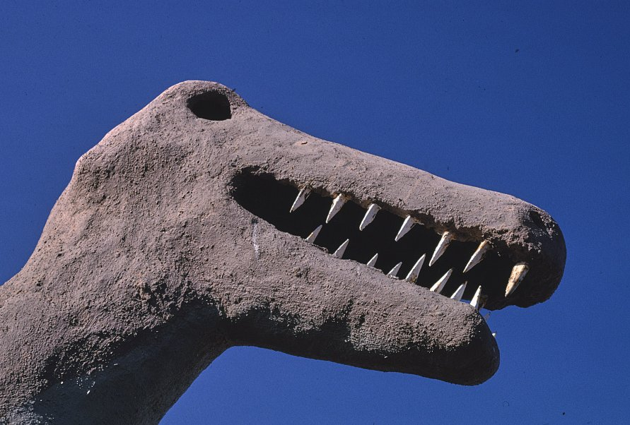

Dinosaur Village RV Mobile Home Park, dinosaur statue head detail, Route 40, Jensen, Utah
John Margolies · 1991 · Colour slide (35 mm transparency) · Library of Congress, Prints and Photographs Division
Free to use
Open in The ArtchiveFull-size file ↗